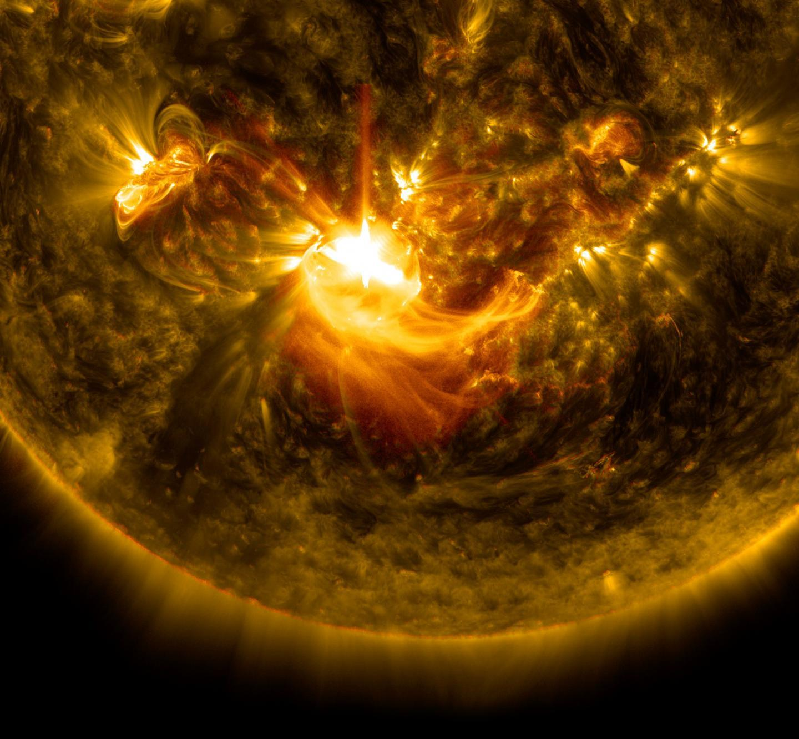
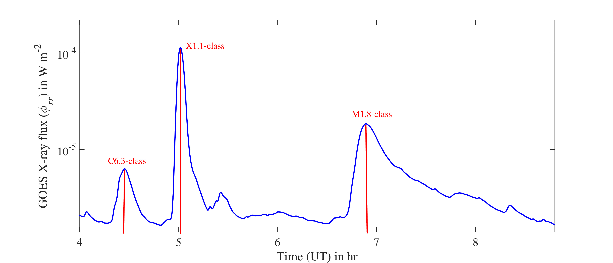

The Sun is a highly dynamic star. Its magnetic field continuously evolves, stores enormous amounts of energy and occasionally releases that energy through powerful eruptive events. Two of the most important manifestations of solar activity are solar flares and coronal mass ejections (CMEs).
Although both phenomena originate from the Sun and can occur in association with active magnetic regions, they represent different physical processes. Solar flares are characterised primarily by the sudden release of electromagnetic radiation, whereas CMEs involve the expulsion of large quantities of magnetised plasma into interplanetary space.
A solar eruption can therefore influence Earth in more than one way — through the radiation that reaches our atmosphere and through energetic particles and magnetised plasma travelling through interplanetary space.
What is a Solar Flare?
Solar flares are sudden and intense releases of electromagnetic radiation from active regions of the Sun. They are usually associated with sunspots and magnetic reconnection in the solar corona.
A flare can emit radiation across a very broad range of the electromagnetic spectrum, extending from radio waves to X-rays and gamma rays. Among these, enhanced X-ray and extreme ultraviolet (EUV) radiation are particularly important for the immediate response of the Earth's ionosphere.

When enhanced solar X-ray and EUV radiation reaches the Earth, it can rapidly increase ionization in the ionosphere. These changes can modify radio-wave propagation and, during sufficiently strong events, lead to phenomena such as shortwave fadeouts and high-frequency (HF) radio blackouts.
How are Solar Flares Classified?
Solar flares are commonly classified according to the peak soft X-ray flux measured near Earth by GOES satellites. The three major classes relevant here are C, M and X, with each class representing an increase in the measured X-ray flux by approximately an order of magnitude.
| Flare Class | Energy Released (J) | Effects on Earth | Maximum X-ray Flux (W m−2) |
|---|---|---|---|
| C-class | 1020–1021 | Minor; usually no significant effects on Earth. | 10−6 ≤ φxr < 10−5 |
| M-class | 1021–1022 | Moderate radio blackouts; minor radiation storms. | 10−5 ≤ φxr < 10−4 |
| X-class | 1022–1025 | Major radio blackouts; radiation and geomagnetic storms. | φxr ≥ 10−4 |

How Do Solar Flares Affect the Ionosphere?
The ionosphere responds rapidly to enhanced solar radiation. In particular, the X-ray and EUV emission associated with a flare can produce additional ionization in the lower ionosphere.
The response is especially important in the D-region, where an increase in electron density can modify the propagation conditions of VLF and LF radio waves.
This provides an interesting opportunity for ionospheric remote sensing. A solar flare occurs approximately 150 million kilometres away, yet its effect can be detected through changes in radio signals propagating between a transmitter and a receiver on or near the Earth's surface.
The X-ray radiation from a solar flare reaches Earth in only about eight minutes. The resulting change in ionization can then produce measurable changes in the lower ionosphere and in sub-ionospheric VLF radio signals.
What is a Coronal Mass Ejection?
A Coronal Mass Ejection (CME) is a large-scale expulsion of magnetised plasma from the solar corona into the heliosphere.
Unlike a solar flare, which is primarily an abrupt release of electromagnetic radiation, a CME involves the transport of a large amount of plasma and magnetic field away from the Sun.
When a CME is directed towards Earth and interacts with the Earth's magnetosphere, it can produce significant geomagnetic disturbances. The resulting geomagnetic storms can have substantial effects on the upper ionosphere and on technological systems.
CMEs and Geomagnetic Storms
The interaction between an Earth-directed CME and the Earth's magnetosphere depends strongly on the magnetic-field configuration of the incoming plasma. In particular, a southward-directed magnetic-field component, commonly represented by Bz < 0, can facilitate stronger coupling between the solar wind and the terrestrial magnetosphere.
Such interactions can trigger geomagnetic storms, during which the upper ionosphere can undergo substantial changes in electron density and electrodynamic behaviour.
These disturbances can alter the F-region ionosphere and consequently influence the Total Electron Content (TEC). Changes in TEC can affect satellite-based communication and navigation systems, including GNSS and GPS.
Energetic Particles and Polar Regions
CMEs and their associated shocks can also accelerate energetic particles. When these particles enter the Earth's atmosphere, particularly in polar regions, they can enhance ionization at lower altitudes.
Enhanced ionization in the polar ionosphere can increase the absorption of high-frequency radio waves. Such events are known as Polar Cap Absorption (PCA) events.
PCA events demonstrate another important connection between solar activity, energetic particles and terrestrial radio-wave propagation.
Solar Flare vs. CME
Solar Flare
Primarily a sudden release of electromagnetic radiation associated with magnetic energy release in the solar corona. Its X-ray and EUV emissions can produce rapid ionospheric disturbances.
Coronal Mass Ejection
A large-scale expulsion of magnetised plasma into the heliosphere. When directed towards Earth, it can interact with the magnetosphere and produce geomagnetic storms.
Why Are They Important for Space Weather?
Solar flares and CMEs represent two different pathways through which solar activity can influence the Earth's near-space environment.
Flare radiation can produce an almost immediate response in the ionosphere, particularly through enhanced X-ray and EUV ionization. CMEs, on the other hand, can take much longer to reach Earth and can produce strong geomagnetic disturbances when they interact with the magnetosphere.
Understanding both phenomena is therefore essential for understanding space weather — the changing conditions in space that can affect the Earth's technological environment.
From the Sun to the ionosphere, a chain of physical processes connects an eruption on the solar surface with measurable changes in the environment around Earth.
In Summary
Solar flares and coronal mass ejections are among the most important manifestations of solar activity. While flares primarily release electromagnetic radiation, CMEs transport large amounts of magnetised plasma into the heliosphere.
Their effects can extend from the ionosphere to the magnetosphere and can influence radio communication, navigation and other space-based technologies.
For ionospheric researchers, these solar events also provide natural experiments. By observing how the ionosphere responds, we can investigate the physical processes linking solar activity with the Earth's near-space environment.
Reference
Tsurutani et al. (2009). Global observations of solar flare effects on the ionosphere.
Pulkkinen et al. (2007). Space weather and geomagnetic storm effects.